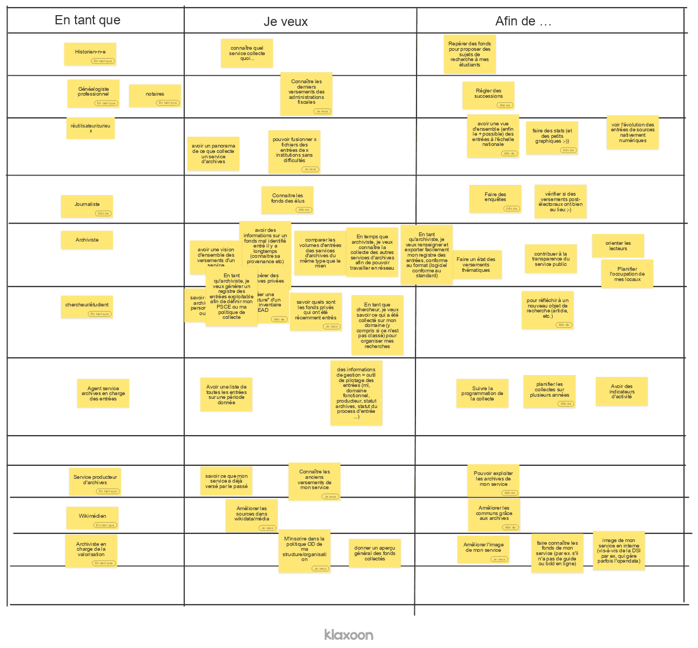

1 Introduction
En 2018, 86 kilomètres de documents et plus de 160 00Go de données sont venus enrichir les collections des services publics d’archives français1.
Dans une optique de gestion et de suivi de leurs fonds, les services d’archives consignent chaque entrée d’archives à partir de renseignements sommaires permettant d’identifier et de retracer toutes les arrivées de nouveaux documents (provenance, date d’arrivée dans le service, volume…) : c’est le registre des entrées.
ajout
Il est généralement directement tenu au sein d’un système d’information dédié aux archives (le SIA), mais il peut également être réalisé avec un tableur voir sur un cahier.
Dans son Cadre stratégique commun de modernisation des archives, la Délégation interministérielle aux archives de France, mentionne dans les objectifs 2020-2024 :
Objectif 1.4 : Numériser les archives et rendre les archives numériques aisément consultables et exploitables
Il conviendra également de généraliser l’open data dans les services d’archives de l’État et de recommander ce modèle aux services territoriaux d’archives. La création d’un schéma de données permet de standardiser la diffusion des données produites par les services d’archives. Cette standardisation est impérative pour les ré-utilisateurs car elle permet de faciliter la découverte des jeux de données et de les utiliser, notamment en simplifiant l’alignement à différentes échelles (utilisation sur des échelles locales ou nationales). # - Phasage de la création du schéma
Cette partie reprend l’organisation du guide publié par Etalab. Elle vient enrichir le contenu méthodologique développé par Etalab d’un retour d’expérience complémentaire.
1.1 Investigation
1.1.1 organisation
L’idée de création d’un schéma de données pour les entrées d’archives vient à la fois du Service Interministériel des Archives de France (SIAF) et de l’Association des Archivistes Français (AAF).
La première étape a été de constituer un groupe de travail composé de ses deux acteurs mais également d’archivistes qui produisent les registres des entrées. L’objectif a été d’avoir un groupe assez représentatif des différents services qui peuvent exister, mais également des outils utilisés par les services. Le groupe a aussi associé un expert chargé de représenter les réutilisateurs et usagers extérieurs aux archives.
Dans le cadre de ce projet, les commanditaires (SIAF et AAF) ont également joué le rôle de sponsors et ont réellement permis de faire avancer et de faciliter le travail.
1.1.2 Etat des lieux
Un état des lieux des services ayant déjà publié en open data leur registre d’entrées a ouvert la démarche. Pour cela, une recherche sur data.gouv a permis d’identifier 9 jeux de données en ligne.
Un premier constat a pu être établi :
des services ont déjà publié ce type de données
il n’y a pas un modèle unique de registre des entrées
la publication reste malgré tout marginale
la granularité et le périmètre de publication ne sont pas toujours les mêmes
Pour compléter cet échantillon, un appel à transmission d’exemples de registres d’entrées a été lancé. Afin d’être suffisamment représentatif, des services utilisant différents logiciels métiers.
Ces versions de registres sont donc, dans la plupart des cas, des extractions des outils de gestion (Système d’Information archivistique), ils reflètent la structure même des bases de données dans lesquelles les données sont produites. Le nombre de SIA sur le marché étant assez limité, nous avons pu accéder à une version du registre pour une majorité d’éditeurs.
L’adéquation entre SIA et registre d’entrées est forte, le travail à effectuer sur le fichier en sortie de SIA sera sans doute important (changement de nom de colonne, enrichissement, nettoyage de données…). une piste pour lutter contre ce problème serait que les éditeurs implémentent le schéma de données comme modèle de données pour les registres des entrées des SIA.
1.1.3 Identification des cas d’usages des données
La compréhension des usages potentiels des jeux de données est importante car elle permet d’évaluer les besoins en données. Pour cela, un atelier sur des cas d’usages et sur les (ré)utilisateurs a été réalisé. Il posait les questions suivantes :
En tant que
Je veux
Afin de
Cette démarche permet d’identifier le type d’utilisateurs, leurs besoins et leurs objectifs.

A l’issu de cet atelier, nous pouvons distinguer 2 grandes catégories d’usagers :
- Usagers internes : archivistes, services producteurs
- Usagers externes : étudiants, érudit, curieux et professionnels (journalistes, historiens, généalogistes professionnels, notaires)
Les premiers ayant des besoins plutôt orientés sur le pilotage, le suivi et la gestion et les seconds des besoins beaucoup plus vastes et difficiles à anticiper et prévoir.
De ce travail , il est possible d’identifier les intérêts de la publication des données des registres des entrées :
apporte de la visibilité sur le travail de collecte
permet de s’orienter dans les fonds
offre une vision agrégée sur les collectes réalisées
avoir des indicateurs d’activité
1.1.4 Analyse des données
Une fois ce premier travail effectué, il a fallu analyser les registres collectés et transmis par les services, pour cela, les différents éléments ont été regroupés dans une base de données relationnelles en procédant au :
recensement des sources de données, producteurs, types de producteurs, source des données
dépouillement des fichiers de données : compilation de tous les éléments présents dans les différents fichiers et tels qu’ils existent (par ex. “cote” et “cotation”, même s’ils représentent la même chose, constituent chacun une entrée). Ajout d’une description du champ, du type (même si dans la très grande majorité des cas il s’agit de champ de type “chaîne de caractères”)
regroupement par la création de familles et de sous-familles. Ces éléments apparaissent assez rapidement une fois le travail d’identification effectué. Les familles et sous-familles permettent de voir les éléments importants du schéma.
1.2 Concertation
Les citations proviennent de schema.data.gouv.fr
1.2.1 Profiter de l’existant
De nombreux standards existent déjà, qu’ils concernent des formats de données ou des formats de champs. Certains standards sont devenus incontournables aujourd’hui, comme ISO-8601 pour les dates ou WGS 84 pour les coordonnées géographiques.
Profiter de l’existant c’est aussi le travail effectué lors de la phase d’identification. Partir de ce qui existe, en tirer le commun puis ajuster/adapter.
1.2.2 Identifier et associer l’écosystème
Les personnes/organisations que vous associez sont la meilleure garantie d’un schéma de données efficace et largement adopté, permettant d’aboutir à un véritable standard. Les producteurs d’une part qui connaissent la réalité de leurs données, de la collecte, etc. et qui ont leurs propres usages. Les usagers d’autre part, leurs besoins et leurs difficultés d’autres part, qu’ils soient déjà connus, « sous le radar » ou en devenir.
Dans le cas des registres des entrées, l’association de l’écosystème a été simple car il s’agit d’une commande par le réseau et pour le réseau. C’est sans doute plus difficile d’associer des usagers mais cela a tout de même été fait en associant un expert qui avait beaucoup commenté le registre des Archives Nationales lors de sa publication.
1.2.3 Prendre le temps
Un schéma de données est susceptible de concerner beaucoup de producteurs et d’usagers. Sa modification peut avoir un impact important. Il est donc crucial de prendre le temps d’obtenir tous les retours avant de publier un schéma utilisable par le plus grand nombre. Un schéma de données devrait être publié quand il est prêt, non pas en fonction d’un impératif de délai.
Les pratiques de chaque service impactent assez fortement les fichiers produits. Le choix a été fait dès le départ de faire un schéma le plus exhaustif complet et avec de nombreux éléments optionnels afin de pouvoir prendre en compte la plupart des pratiques.
1.2.4 Cas de l’identifiant pivot
Utiliser des données pivot relevant d’un référentiel ouvert pour relier les données à d’autres données, par exemple l’utilisation du numéro SIREN pour identifier des organisations.
Il est à noter que l’importance du recours à des référentiels partagés figure également dans le Cadre stratégique des Archives
Objectif 6.1 : Promouvoir l’utilisation d’autorités et de référentiels partagés
La recherche d’une donnée pivot a été une opération assez délicate. L’utilisation du SIREN de la collectivité à laquelle appartient le service des archives ne s’avérait pas totalement satisfaisante, la notion de service public d’archives étant gommée au profit de l’institution d’appartenance. Par ailleurs, dans certains cas, cela pouvait entraîner une confusion plus préjudiciable : cas des versements réalisés par les services déconcentrés de l’Etat et conservés par les services départementaux d’archives.
Il pouvait y avoir 2 candidats à cet identifiant pivot :
de nombreux services diffusant leurs fonds numérisés en ligne possèdent des identifiants pérennes ARK. L’ARK se compose d’une partie, le Name Assigning Authority Number (NAAN), qui permet d’identifier une institution. Mais, même si le registre des NAAN est public, il n’est pas diffusé de façon structuré. Par ailleurs, tous les services n’ont pas un tel identifiant et cela semble complexe de le rendre obligatoire pour les services.
Les archivistes utilisent depuis de nombreuses années un standard de description des archives, l’Encoded Archives Description (EAD), l’EAD comporte une balise
qui possède l’attribut MAINAGENCYCODE. Cela fait référence à une autre norme, l’ISAD-G, qui dans son 3.1.1, définit bien les éléments d’identification d’un fonds. le code du pays conformément à la dernière version de l’ISO 3166, Codes pour la représentation des noms de pays (FR);
le code du service d’archives conformément à la norme nationale de codification des services d’archives, ou tout autre élément d’identification du lieu de conservation (AD01);
la cote ou tout autre élément d’identification spécifique (1W).
L’EAD précise pour sa part que le MAINAGENCYCODE doit être conforme à la norme ISO 15511, qui pour la France correspond à FR-[identifiantRCR]. Le Répertoir des centres de ressources (RCR) est lui-même structuré de la façon suivante : sur 9 chiffres reprenant : Code géog. postal, n° INSEE, numéro séquentiel. Une recherche simple et rapide permet de vite se rendre compte que ce n’est pas le cas.
Pour les archives départementales, le code est de type : FRAD_0COG (ex. FRAD_001)
Pour les archives communales, le code est de type : FRAC_COG (ex. FRAC_06088) ou FRAC_CodePostal (FRAC_95500)
Cas des archives métropolitaines ou services mutualisés
Pour les services de l’Etat
L’une des limites est que la liste des identifiants n’est pas publiée en open data et donc permettant de réellement jouer son rôle de pivot.
Il existe d’autres identifiants (VIAF, ISNI…) mais ceux-ci ne sont pas utilisés (connus) par les services archives, qui ne les utilisent pas, en l’état actuel de diffusion de ces identifiants, ils ne constituent donc pas un pivot intéressants pour faire le lien entre un service et des IR par exemple.
1.2.5 Concertation en dehors du GT
[A VENIR] Lien avec schema.data.gouv.fr
1.3 construction
[A VENIR]
Obtenir des retours sur la réalisation des jeux de données
accompagner les utilisateurs du schéma
2 - Remarques générales sur les schémas de données
2.1 Quand utiliser ce shéma?
Ce shéma peut être utilisé lors de la publication d’un jeu de données de registre des entrées. Il a été créé par des services publics d’archives mais il peut tout à fait convenir à des services d’archives privées ou à des établissements spécialisés.
2.2 Suis-je obligé d’utiliser ce schéma?
Non, aucune obligation car ce schéma n’a pas de caractère réglementaire. En revanche, si vous souhaitez publier des données l’utilisation de ce shéma est très fortement recommandée car il peut permettre une réutilisation plus facile de vos données car il est documenté et que vos données sont standardisées et peuvent être agrégée et comparée avec d’autres.
2.3 Recommandations pour le formatage des fichiers
Le format de fichier retenu pour la publication des données est le CSV (Comma Separated Values, valeurs séparées par des virgules).
Les fichiers doivent, sauf exception et autant que possible, respecter les règles de formatage suivantes :
l’encodage des caractères est UTF-8,
le séparateur des colonnes est la virgule,
le séparateur des nombres décimaux est le point,
le séparateur de valeurs multiples dans un champ est le point-virgule,
si un champ contient une virgule, il doit être entouré de guillemets doubles,
chaque ligne doit avoir le même nombre de champs,
le type MIME ou Content-Type est text/csv.
2.4 Recommandations pour le nommage des fichiers
Les fichiers doivent, sauf exception et autant que possible, respecter les règles de nommage suivantes :
AAAAMMJJ_idProducteur_registre_des_entrees_millesime.csv
AAAAMMJJ : Date de création du fichier
idServArch : identifiant du service d'archives (ex. FRAD_001)
registre_des_entrees : nom du fichier, en minuscules non accentuées
millésime : année des entrées
extension : Si les règles de formatage sont respectées, l'extension est .csvExemple : ‘20201012_FRAD_001_registre_des_entrees_2020.csv’
2.5 Recommandations pour la mise en conformité
Ces conseils reprennent ceux du Schéma des données locales publié par Open Data france
Les fichiers doivent comporter :
Toutes les colonnes, y compris celles dont les cellules ne sont pas renseignées, dans le bon ordre, et avec des en-têtes correctement nommées sur la première ligne (nom correspondant strictement au schéma)
Autant de lignes que nécessaire comprenant des cellules dont les valeurs peuvent être obligatoires (elles doivent être impérativement renseignées) ou optionnelles (elles sont seulement recommandées ou soumises à condition de disponibilité / pertinence)
Traitement des cellules vides (absence de valeur ou valeur équivalente à 0) : ces cellules doivent être laissées vides. Dans le cas où une valeur numérique est égale à zéro elle doit être écrite 0.0 (zéro [point] zéro), et, dans le cas où des caractères spéciaux sont utilisés pour remplacer des valeurs manquantes (ex. “-” ou “NaN”), cela doit être mentionné dans les métadonnées.
2.6 Recommandations pour la découvrabilité
Le respect du nommage de fichier et des métadonnées du schéma doivent permettre de découvrir l’ensemble des jeux de données répondant au schéma.
3 - Les étapes de publication d’un jeu de données
Pour préparer la publication de vos données, vous pouvez trouver des informations sur les fiches pratiques réalisées par OpenDataFrance
3.1 Identifier les données
Lors de la phase de création du standard, nous avons identifié deux sources de productions des données, elles peuvent :
provenir des SIA
provenir de fichers tabulaires (excel, calc)
3.2 Préparer les données
Il va falloir préparer les données afin qu’elles correspondent au modèle défini par le standard. Il peut être nécessaire de changer le nom des colonnes, de supprimer ou ajouter certaines colonnes, de modifier des valeurs etc.
3.3 Documenter les données
[A CONSTRUIRE]
Gérér les métadonnées
Métadonnées descriptives * Nom du producteur du jeu de données : * Titre du jeu de données : * Description du jeu de données : * Taille du fichier : * Catégories (tag) :
Métadonnées administratives
* Date de création du jeu de données : * Date de modification : * Licence : * Fréquence de mise à jour : * Période temporelle couverte : * Aire géographique couverte : * Contact :
3.4 Choisir une licence?
3.5 Où publier ses données?
4 - Le schéma registre des entrées
[EN CONSTRUCTION]
Spécification du modèle de données relatif aux registres des entrées des services publics d’archives.
4.1 Contexte
4.2 Outils
4.3 Voir aussi
Pour poser une question, commenter, faire un retour d’usage ou contribuer à l’amélioration du modèle de données, vous pouvez :
4.4 Registres des entrées
Spécification du modèle de données relatif aux délibérations adoptées par une collectivité locale
- nom :
- page d’accueil :
- URL du schéma :
- version :
- date de création :
- date de dernière modification :
- concerne le pays : FR
- valeurs manquantes représentées par :
[""] contributeurs :
- ressources :
- Exemple de fichier
4.4.1 Modèle de données
Ce modèle de données repose sur les 17 champs suivants correspondant aux colonnes du fichier tabulaire.
4.4.1.1 ID
- titre :
- description :
- type :
- exemple :
Ville de Poitiers - valeur obligatoire